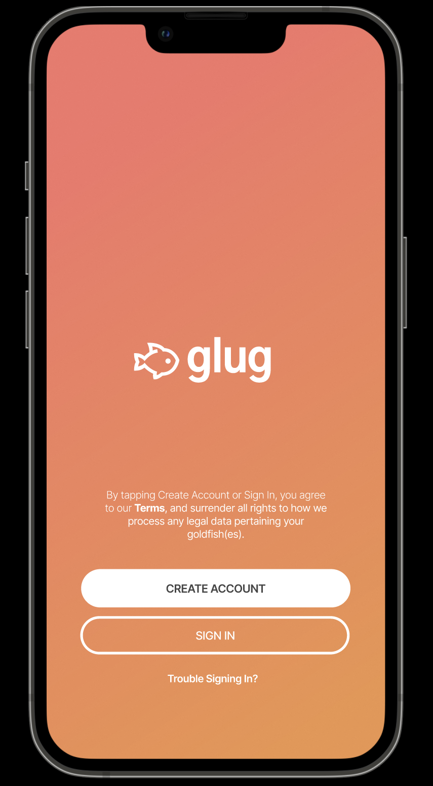

Portfolio
Learning Empathic Design
About me
I am a junior at Brown University studying computer science and linguistics but I'm also a Gen Z designer interested in dance, drawing, languages, and much more. The basic principles of empathic design, taking audience and users into account, trickle into all of these facets of my daily life—here are a few ways I've explored that.
My projects
Personas and Storyboarding
Abstracting away to the most basic building blocks:
A deep dive into a simple speaker interface, its exemplar users, and a typical interaction process. By interviewing users and reflecting on various situations in which this interface could be used, I developed an understanding for connecting even the smallest design choices to real people.

High Fidelity Prototyping
From idea to prototype:
After learning how to think about the actual users of each interface, I started to think about how to design for those users. Through this project, I challenged myself to design an application similar to Tinder for goldfish—this unique audience required me to think about elements such as color scheme, hierarchy, and usability.

Responsive Redesign
Keeping audience in mind:
Building off of working with just a few users in the previous project, I redesigned a home page for an Indigenous American languages website. This time, I had to think about the usability needs for a much larger and varied audience, consisting of academics, Indigenous community members, families, educators, and more. How do I balance ease of usability with comprehensiveness of content to match the needs of all these potential users?

Iterative Design
Designing and redesigning:
From redesigning a simple page, I worked in a group to mock up an interactive prototype for a real startup concept. Through this project we learned to incorporate feedback from peers and real user testing tasks to inform our design choices and break down our own assumptions about what is practically usable.